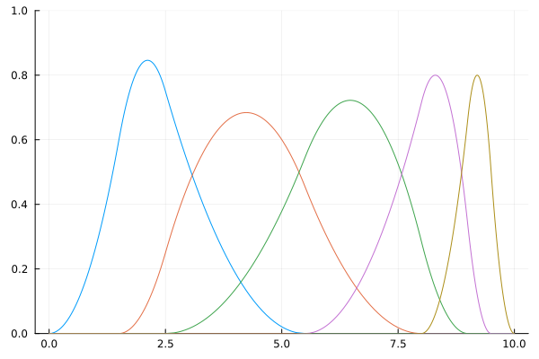
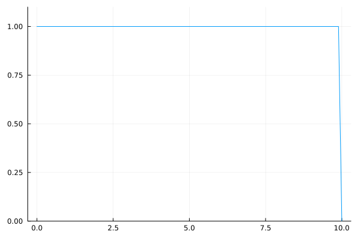
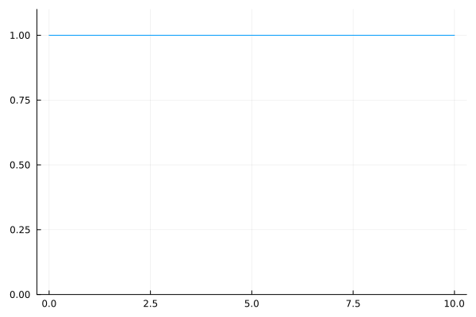

B-spline basis function
Setup
using BasicBSpline
using Random
using Plots; gr()Plots.GRBackend()Basic properties of B-spline basis function
B-spline basis function is defined by Cox–de Boor recursion formula.
\[\begin{aligned} {B}_{(i,p,k)}(t) &= \frac{t-k_{i}}{k_{i+p}-k_{i}}{B}_{(i,p-1,k)}(t) +\frac{k_{i+p+1}-t}{k_{i+p+1}-k_{i+1}}{B}_{(i+1,p-1,k)}(t) \\ {B}_{(i,0,k)}(t) &= \begin{cases} &1\quad (k_{i}\le t< k_{i+1})\\ &0\quad (\text{otherwise}) \end{cases} \end{aligned}\]
If the denominator is zero, then the term is assumed to be zero.
The next figure shows the plot of B-spline basis functions. You can manipulate these plots on desmos graphing calculator!

The set of functions $\{B_{(i,p,k)}\}_i$ is a basis of B-spline space $\mathcal{P}[p,k]$.
These B-spline basis functions can be calculated with bsplinebasis₊₀.
julia> p = 22julia> k = KnotVector([0.0, 1.5, 2.5, 5.5, 8.0, 9.0, 9.5, 10.0])KnotVector([0.0, 1.5, 2.5, 5.5, 8.0, 9.0, 9.5, 10.0])julia> P = BSplineSpace{p}(k)BSplineSpace{2, Float64, KnotVector{Float64}}(KnotVector([0.0, 1.5, 2.5, 5.5, 8.0, 9.0, 9.5, 10.0]))julia> plot([t->bsplinebasis₊₀(P,i,t) for i in 1:dim(P)], 0, 10, ylims=(0,1), label=false)Plot{Plots.GRBackend() n=5}GKS: cannot open display - headless operation mode active

The first terms can be defined in different ways (bsplinebasis₋₀).
\[\begin{aligned} {B}_{(i,0,k)}(t) &= \begin{cases} &1\quad (k_{i} < t \le k_{i+1}) \\ &0\quad (\text{otherwise}) \end{cases} \end{aligned}\]
julia> p = 22julia> k = KnotVector([0.0, 1.5, 2.5, 5.5, 8.0, 9.0, 9.5, 10.0])KnotVector([0.0, 1.5, 2.5, 5.5, 8.0, 9.0, 9.5, 10.0])julia> P = BSplineSpace{p}(k)BSplineSpace{2, Float64, KnotVector{Float64}}(KnotVector([0.0, 1.5, 2.5, 5.5, 8.0, 9.0, 9.5, 10.0]))julia> plot([t->bsplinebasis₋₀(P,i,t) for i in 1:dim(P)], 0, 10, ylims=(0,1), label=false)Plot{Plots.GRBackend() n=5}

In these cases, each B-spline basis function $B_{(i,2,k)}$ is coninuous, so bsplinebasis₊₀ and bsplinebasis₋₀ are equal.
Support of B-spline basis function
If a B-spline space$\mathcal{P}[p,k]$ is non-degenerate, the support of its basis function is calculated as follows:
\[\operatorname{supp}(B_{(i,p,k)})=[k_{i},k_{i+p+1}]\]
[TODO: fig]
BasicBSpline.bsplinesupport — FunctionReturn the support of $i$-th B-spline basis function.
\[\operatorname{supp}(B_{(i,p,k)})=[k_{i},k_{i+p+1}]\]
Examples
julia> k = KnotVector([0.0, 1.5, 2.5, 5.5, 8.0, 9.0, 9.5, 10.0])
KnotVector([0.0, 1.5, 2.5, 5.5, 8.0, 9.0, 9.5, 10.0])
julia> P = BSplineSpace{2}(k)
BSplineSpace{2, Float64, KnotVector{Float64}}(KnotVector([0.0, 1.5, 2.5, 5.5, 8.0, 9.0, 9.5, 10.0]))
julia> bsplinesupport(P,1)
0.0 .. 5.5
julia> bsplinesupport(P,2)
1.5 .. 8.0Partition of unity
Let $B_{(i,p,k)}$ be a B-spline basis function, then the following equation is satisfied.
\[\begin{aligned} \sum_{i}B_{(i,p,k)}(t) &= 1 & (k_{p+1} \le t < k_{l-p}) \\ 0 \le B_{(i,p,k)}(t) &\le 1 \end{aligned}\]
julia> p = 22julia> k = KnotVector([0.0, 1.5, 2.5, 5.5, 8.0, 9.0, 9.5, 10.0])KnotVector([0.0, 1.5, 2.5, 5.5, 8.0, 9.0, 9.5, 10.0])julia> P = BSplineSpace{p}(k)BSplineSpace{2, Float64, KnotVector{Float64}}(KnotVector([0.0, 1.5, 2.5, 5.5, 8.0, 9.0, 9.5, 10.0]))julia> plot(t->sum(bsplinebasis₊₀(P,i,t) for i in 1:dim(P)), 0, 10, ylims=(0,1.1), label=false)Plot{Plots.GRBackend() n=1}

To satisfy the partition of unity on whole interval $[0,10]$, sometimes more knots will be inserted to the endpoints of the interval.
julia> p = 22julia> k = KnotVector([0.0, 1.5, 2.5, 5.5, 8.0, 9.0, 9.5, 10.0]) + p * KnotVector([0,10])KnotVector([0.0, 0.0, 0.0, 1.5, 2.5, 5.5, 8.0, 9.0, 9.5, 10.0, 10.0, 10.0])julia> P = BSplineSpace{p}(k)BSplineSpace{2, Float64, KnotVector{Float64}}(KnotVector([0.0, 0.0, 0.0, 1.5, 2.5, 5.5, 8.0, 9.0, 9.5, 10.0, 10.0, 10.0]))julia> plot(t->sum(bsplinebasis₊₀(P,i,t) for i in 1:dim(P)), 0, 10, ylims=(0,1.1), label=false)Plot{Plots.GRBackend() n=1}

But, the sum $\sum_{i} B_{(i,p,k)}(t)$ is not equal to $1$ at $t=8$. Therefore, to satisfy partition of unity on closed interval $[k_{p+1}, k_{l-p}]$, the definition of first terms of B-spline basis functions are sometimes replaced:
\[\begin{aligned} {B}_{(i,0,k)}(t) &= \begin{cases} &1\quad (k_{i} \le t<k_{i+1})\\ &1\quad (k_{i} < t = k_{i+1}=k_{l})\\ &0\quad (\text{otherwise}) \end{cases} \end{aligned}\]
julia> p = 22julia> k = KnotVector([0.0, 1.5, 2.5, 5.5, 8.0, 9.0, 9.5, 10.0]) + p * KnotVector([0,10])KnotVector([0.0, 0.0, 0.0, 1.5, 2.5, 5.5, 8.0, 9.0, 9.5, 10.0, 10.0, 10.0])julia> P = BSplineSpace{p}(k)BSplineSpace{2, Float64, KnotVector{Float64}}(KnotVector([0.0, 0.0, 0.0, 1.5, 2.5, 5.5, 8.0, 9.0, 9.5, 10.0, 10.0, 10.0]))julia> plot(t->sum(bsplinebasis(P,i,t) for i in 1:dim(P)), 0, 10, ylims=(0,1.1), label=false)Plot{Plots.GRBackend() n=1}

Here are all of valiations of the B-spline basis function.
Differentiability and knot duplications
The differentiability of the B-spline basis function depends on the duplications on the knot vector.
The following animation shows this property.
# Initialize
gr()
Random.seed!(42)
N = 10
# Easing functions
c=2/√3
f(t) = ifelse(t>0, exp(-1/t), 0.0)
g(t) = 1 - f(c*t) / (f(c*t) + f(c-c*t))
h(t) = clamp(1 - f((1-t)/2) / f(1/2), 0, 1)
# Default knot vector
v = 10*(1:N-1)/N + randn(N-1)*0.5
pushfirst!(v, 0)
push!(v, 10)
# Generate animation
anim = @animate for t in 0:0.05:5
w = copy(v)
w[5] = v[4] + (g(t-0.0) + h(t-3.9)) * (v[5]-v[4])
w[6] = v[4] + (g(t-1.0) + h(t-3.6)) * (v[6]-v[4])
w[7] = v[4] + (g(t-2.0) + h(t-3.3)) * (v[7]-v[4])
k = KnotVector(w)
P0 = BSplineSpace{0}(k)
P1 = BSplineSpace{1}(k)
P2 = BSplineSpace{2}(k)
P3 = BSplineSpace{3}(k)
plot(
plot(P0; label="P0", ylims=(0,1), color=palette(:cool,4)[1]),
plot(P1; label="P1", ylims=(0,1), color=palette(:cool,4)[2]),
plot(P2; label="P2", ylims=(0,1), color=palette(:cool,4)[3]),
plot(P3; label="P3", ylims=(0,1), color=palette(:cool,4)[4]),
plot(k; label="knot vector", ylims=(-0.1,0.02), color=:white, yticks=nothing);
layout=grid(5, 1, heights=[0.23 ,0.23, 0.23, 0.23, 0.08]),
size=(501,800)
)
end
# Run ffmepg to generate mp4 file
# cmd = `ffmpeg -y -framerate 24 -i $(anim.dir)/%06d.png -c:v libx264 -pix_fmt yuv420p differentiability.mp4`B-spline basis functions at specific point
Sometimes, you may need the non-zero values of B-spline basis functions at specific point. The bsplinebasisall function is much more efficient than evaluating B-spline functions one by one with bsplinebasis function.
julia> using BenchmarkTools, BasicBSplinejulia> P = BSplineSpace{2}(KnotVector([0.0, 1.5, 2.5, 5.5, 8.0, 9.0, 9.5, 10.0]))BSplineSpace{2, Float64, KnotVector{Float64}}(KnotVector([0.0, 1.5, 2.5, 5.5, 8.0, 9.0, 9.5, 10.0]))julia> t = 6.36.3julia> (bsplinebasis(P, 2, t), bsplinebasis(P, 3, t), bsplinebasis(P, 4, t))(0.2101818181818182, 0.7166753246753247, 0.0731428571428571)julia> bsplinebasisall(P, 2, t)3-element StaticArraysCore.SVector{3, Float64} with indices SOneTo(3): 0.21018181818181822 0.7166753246753247 0.0731428571428571julia> @benchmark (bsplinebasis($P, 2, $t), bsplinebasis($P, 3, $t), bsplinebasis($P, 4, $t))BenchmarkTools.Trial: 10000 samples with 996 evaluations. Range (min … max): 24.704 ns … 48.414 ns ┊ GC (min … max): 0.00% … 0.00% Time (median): 25.177 ns ┊ GC (median): 0.00% Time (mean ± σ): 25.311 ns ± 1.161 ns ┊ GC (mean ± σ): 0.00% ± 0.00% █▅ ▂▂▆██▇▃▂▂▂▂▂▂▁▁▁▂▂▂▂▂▂▂▂▂▂▁▁▁▁▁▂▁▂▁▁▁▁▂▂▁▁▁▁▁▁▁▁▁▁▁▁▂▁▁▁▂▁▂ ▂ 24.7 ns Histogram: frequency by time 31.7 ns < Memory estimate: 0 bytes, allocs estimate: 0.julia> @benchmark bsplinebasisall($P, 2, $t)BenchmarkTools.Trial: 10000 samples with 999 evaluations. Range (min … max): 8.333 ns … 35.270 ns ┊ GC (min … max): 0.00% … 0.00% Time (median): 8.473 ns ┊ GC (median): 0.00% Time (mean ± σ): 8.461 ns ± 0.468 ns ┊ GC (mean ± σ): 0.00% ± 0.00% ▄ █ ▂ ▆ ▆ ▂▁█▁▁█▁▅▅▁▂▁▁▂▁▂▂▁▄▁▃▃▁▃▁▁▃▁▃▃▁▄▁▁▄▁▃▄▁█▁▆█▁█▁▁▄▁▂▂▁▃▁▁▃▁▂ ▃ 8.33 ns Histogram: frequency by time 8.55 ns < Memory estimate: 0 bytes, allocs estimate: 0.
The next figures illustlates the relation between domain(P), intervalindex(P,t) and bsplinebasisall(P,i,t).
plotly()
k = KnotVector([0.0, 1.5, 2.5, 5.5, 8.0, 9.0, 9.5, 10.0])
for p in 1:3
local P
P = BSplineSpace{p}(k)
plot(P, legend=:topleft, label="B-spline basis (p=1)")
plot!(t->intervalindex(P,t),0,10, label="Interval index")
plot!(t->sum(bsplinebasis(P,i,t) for i in 1:dim(P)),0,10, label="Sum of B-spline basis")
scatter!(k.vector,zero(k.vector), label="knot vector")
plot!([t->bsplinebasisall(P,1,t)[i] for i in 1:p+1],0,10, color=:black, label="bsplinebasisall (i=1)", ylim=(-1,8-2p))
endUniform B-spline basis and uniform distribution
Let $X_1, \dots, X_n$ be i.i.d. random variables with $X_i \sim U(0,1)$, then the probability density function of $X_1+\cdots+X_n$ can be obtained via BasicBSpline.uniform_bsplinebasis_kernel(Val(n-1),t).
N = 100000
# polynomial degree 0
plot1 = histogram([rand() for _ in 1:N], normalize=true, label=false)
plot!(t->BasicBSpline.uniform_bsplinebasis_kernel(Val(0),t), label=false)
# polynomial degree 1
plot2 = histogram([rand()+rand() for _ in 1:N], normalize=true, label=false)
plot!(t->BasicBSpline.uniform_bsplinebasis_kernel(Val(1),t), label=false)
# polynomial degree 2
plot3 = histogram([rand()+rand()+rand() for _ in 1:N], normalize=true, label=false)
plot!(t->BasicBSpline.uniform_bsplinebasis_kernel(Val(2),t), label=false)
# polynomial degree 3
plot4 = histogram([rand()+rand()+rand()+rand() for _ in 1:N], normalize=true, label=false)
plot!(t->BasicBSpline.uniform_bsplinebasis_kernel(Val(3),t), label=false)
# plot all
plot(plot1,plot2,plot3,plot4)